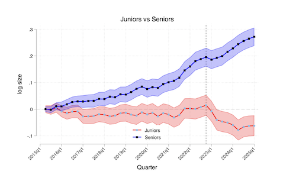

Entering A Rapidly Evolving Job Market
September 2025
What is it like for a recent graduate to enter a global job market more uncertain than ever before?
A Storm Of Change
AI is rapidly taking over a large part of the "knowledge-based" work world. Tasks are being automated and jobs displaced, and that is all the more true for entry-level positions. The old intern role can be done with a $20 monthly ChatGPT subscription. Displacement is happening everywhere and daily.
Shown below are the results of a Harvard University study that found that in average firms are hiring less for junior positions, whilst more senior positions are increasingly being sought after.

As a 22-year-old just out of university, this can be overwhelming. Did I spend years studying content that became worthless with the rise of AI?
To offer a contrary point of view, Shopify's Head of Engineering, Farhan Thawar gave us some hope when he said the following about interns:
"They're always interested in new tools and shortcuts. I want them to be lazy and use the latest tooling," he says. "We saw this happen in mobile. I hired lots of interns back then because I knew they were mobile native."
Nonetheless, the need for sophistication has gone up substantially. A university degree does not cut it.
Michael Truell, Co-founder & CEO of Cursor, one of the fastest growing start-ups ever, said that he likes to hire for "Intellectual curiosity."
So what can we, young professionals, do to show that we are curious and want to succeed and add value to today's world?
From this conundrum, certain questions arise:
What skills should I acquire? What should I focus on? Do I need to learn something new? What is my career going to look like?
These are all open questions that are hard to answer with certainty.
But in my short time as part of the global workforce, I've found two skills commonly present in people I've admired, enjoyed working with, and learned a lot from. Skills that have only increased in value as I have deepened my adoption of AI. Skills I believe will outlast the wave of automation. Skills that can help us thrive.
The Skills
The two skills I want to talk about are computer proficiency and clear and descriptive communication.
Just to clarify: By computer proficiency, I do not mean the ability to navigate applications used in daily work life, as most of us become well-versed in that area quite quickly after entering new environments.
I chose these two skills because I believe they apply indiscriminately to most professions that may be replaced or augmented by AI.
Computer Proficiency
In his latest book, Nexus, Yuval Noah Harari interestingly uses the terms "computers" and "AI" interchangeably to talk about the same thing.
We will adhere to his view and divide computer proficiency into (i) understanding the functioning of a computer and therefore being able to layout its capabilities, and (ii) the ability to interact with AI Language Models efficiently and accurately.
Harnessing Computers
(i) First, I believe developing an understanding of software engineering (the why and how of computers) can be of great value.
I am aware that most of us do not specialise in computer science and will probably never become experts in the field, but an insight into the world of coders and their playbook can broaden our view of what can be achieved with software. Let me tell you why.
Understanding how software is built and stored, what resides in our hardware and what is on the 'cloud', what the cloud actually is, what the console/terminal is and what we can use it for, are just a few fundamentals that can help massively.
Knowledge of these concepts will give an advantage to the business person in an ever growing digital world. They will enable us to think in terms of what we need to design, what we need to build, and what we can automate.
Automation in particular is the concept of the moment. It is the force behind this article; the engine driving displacement.
Lacking a clear insight into automation and its implementation will leave us behind.
With the fields mentioned before, frameworks like n8n; a free tool designed to build automations, or the programming language python, can begin to be explored, and open up the frame of mind that looks at manual work with the thought of automating it. If interested, I encourage you to check out the following course by Andrew Ng: AI Python for Beginners.
I believe this is what the world of today requires.
As Mark Freedman, a colleague of mine said whilst presenting on AI at the Brain Labs office in Buenos Aires; 'we probably won't be replaced by AI, but by someone who knows how to use it.'
Mastering Large Language Models
(ii) We now get to the second part of our definition of computer proficiency: Mastering Large Language Models, which literally means getting good at using AI.
On November 30 of this year, it will be the third anniversary of ChatGPT.
Meaning that as of September 2025, generative AI has only been publicly available for under three years.
Within that relatively short period of time, most of us have become dependent on the technology. Dependent in the sense of it being the fallback place we go to resolve any kind of doubt, to inspire us when stuck, and correct us when unsure.
The capabilities of AI today are out of a fantasy by every standard of measure we had just five years ago.
Nonetheless, we have all probably realised that the quality of the output is directly correlated with the input (prompt).
It is from this reality that fields such as "Prompt Engineering" started to arise. In this field, experts from companies in the industry established a set of best practices to get the most out of AI.
Those best practices usually include giving the prompt a structure with the following components: A role (e.g: "You're an expert in corporate finance"), context, and a desired output structure.
Particularly the latter two, I have found are crucially important when precision is needed from Artificial Intelligence. Providing a detailed description from a "level 0" understanding and describing how we'd like the response to be, will always result immensely valuable. I encourage everyone to incorporate these into their use of LLMs, and to dive deeper on how we can best interact with them.
Dan Shipper, Co-founder and CEO at the tech newspaper Every said that "Models are only as good as the information they have access to."
Ultimately, it is in our best interest to treat AI as a highly intelligent assistant who knows absolutely nothing about our specific situation, our thought process, or our desired outcomes.
Technicality is valuable, but ideas are executed in teams, so let's get to the second skill.
Communicating Clearly
Brain Labs, the digital marketing agency I have recently started working at, has a set of culture codes that they encourage their employees to follow along.
Culture code number 6 is Radical Clarity.
Dan Gilbert, our CEO, urges us to say things clearly, directly, and early.
"It's how we tackle real problems, challenge ideas, and commit to action with confidence. It means making sure everyone leaves the room knowing exactly what comes next and why it matters."
I chose to write about this skill even before joining my actual company and getting to know their way of thinking, and I was glad to discover that they valued it highly. I believe being clear and direct in what we want or need to say is key to collaboration.
This type of communication removes room for doubt and enables us to proceed with certainty about the course of action that everyone in the team is taking. It lowers the probability for mistakes and confusion.
In the world of AI, there are too many tools available for us to ignore.
ChatGPT can be a great springboard to give us the momentum we need to start writing a message when we are uncertain of what or how we want it to be. It is also a must-have editor and proof-reader at this point; it spares us of all mistakes we commonly make in writing.
Making a habit of starting and evaluating written communication with AI will potentiate your output, and in the long run, your thought process for composing material.
Clarity is key, but we would be incomplete in saying that a good communicator can rest on the knowledge of his ability to be clear; this isn't enough.
Proactiveness I believe is essential for mastering this skill, and not so common among us entering the job market.
Being proactive is the rarer, but all the more important side of being a good communicator.
Being proactive in communication means never taking for granted that someone will know; on the contrary, it means being prudent and assuming the other person does not know, and that we best inform them about our actions or plans.
It's a form of deep empathy and awareness of those around us.
For us who have only recently joined the team, it is the most direct way to let those above know that we want to do the work, and that we care about doing it correctly. It is the precursor to success.
It's also relevant to the company's image: It shows the client that you are on top of business, and that they are priority.
Do not assume that people know, be proactive and clear in communication.
Conclusion
Above are written two skills I believe will prove of value to anyone who absorbs them, even in an age of never-ending change and continuous displacement.
Let us not become frustrated, but rather take part in the enhancement that AI should bring to society.
Get to know computers, train your use of AI, work on clarity, and be proactive.
And to conclude, I'd like to leave a quote from entrepreneur Daniel Priestley, who says; "AI will create both hyper-consumers and hyper-creators. You get to choose which you want to be."
Use AI, use your brainpower, communicate clearly, and set yourself up to thrive.